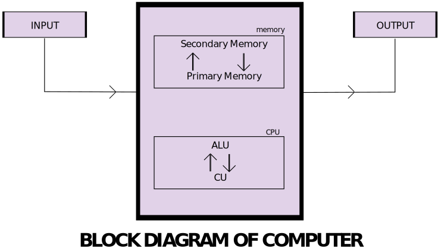
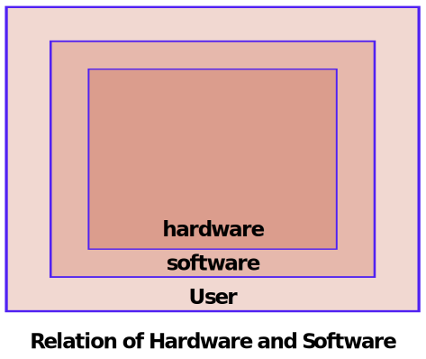

Components of Computers
There are five basic components of the computer that help make this processing of data easier and more convenient.
- Input Unit
- Output Unit
- Memory Unit
- Control Unit
- Arithmetical and Logical Unit

Input Unit
- A computer will only respond when a command is given to the device.
- These commands can be given using the input unit or the input devices.
- For example, using a keyboard, we can type things on a notepad, and the computer processes the entered data and then displays the output of the same on the screen.
- The data entered can be in the form of numbers, alphabet, images, etc.
- We enter the information using an input device, the processing units convert it into computer
understandable languages and then the final output is received by a human-understandable language.
Output Unit
- When we command a computer to perform a task, it reverts for the action performed and gives us a
result. This results is called output.
- There are various output devices connected to the computer.
- The most basic of which is a monitor.
- Whatever we write using keyboard or click using a mouse, is all displayed on the monitor.
- Thus, the output unit gives us the final result once the entire processing is done within the
mechanism of a device.
- For example: when we visit an ATM, we enter our details like language, pin, amount to be withdrawn,
etc. And then the final money which the cash dispenser releases is our outcome. In this case, the
cash dispenser acts as an output unit.
Memory Unit
- When we enter the data into the computer using an input device, the entered information immediately
gets saved in the memory unit of the CPU.
- Because of the presence of some existing programming, the MU transmits the data further to the other
parts of the CPU.
- Similarly, when the output of our command is processed by the computer, it is saved in the memory
unit before giving the output to the user.
Control Unit
- This is the core unit which manages the entire functioning of the computer device.
- It is one of the most essential components of the computer system.
- The Control Unit collects the data entered using the input unit, leads it on for processing and once
that is done, receives the output and presents it to the user.
- It can be said to the centre of all processing actions taking place inside a computer device.
- Basically, the instructions taken, interpretation of entered data, issuing signals to execute the
data and then finally retrieving the data is all done in the control unit.
Arithmetic & Logical Unit
- As the name suggests, all the mathematical calculations or arithmetic operations are performed in
the Arithmetic and Logical Unit of the CPU.
- It can perform actions like a comparision of data and decision-making actions.
- ALU comprises circuits using which addition, subtraction, multiplication, division and other
numerical based calculations can be performed.
Central Processing Unit (CPU)
- The CPU is the core of any computer devices. It comprises three major components of the computer
which have been discussed above :
- Memory Unit
- Control Unit
- Arithmetic and Logical Unit
- All these three units are elements of CPU and together help in the efficient working and processing
of data.
- It is also known as the "Brain of computer" and no action can be conducted by a device without the
execution and permission of the CPU.
Hardware
Computer Hardware is defined as the physical part or component of a computer system which can be felt,
seen and touched.
Types of Hardware Component used in Computer
- For better understanding, different and common types of hardware devices and their uses are mentioned below.
- Caninet Case
- Motherboard
- Ram
- Hard Disk
- CPU
- SMPS (Switching Mode Supply)
- Keyboard
- Mouse
- Monitors
- Printers
- Speakers etc
- These are the most commonly used and common hardware devices. As mentioned above, some of the devices are used for better functionality or to provide additional features. like speakers and printers.
- They are not used in the boot process of the PC, and when found missing, the PC cannot start or boot on its own. They are not responsible for booting computers.
- But some of the devices mentioned above are responsible for the booting process of PC, for example, power supply, CPU, and computer memory [RAM] are essential hardware devices that are solely responsible for the booting of the PC and its better computer functionality.
Cabinet Case
- Caninet case comes in various shape and sizes but commonly used case is a tower case whose
height ranges from 15 to 25 inches.
- They enable different types of hardware devices to be fit in themselves to make it a whole and
all the devices are connected to the case using screws.
- The commonly attached hardware devices to the PC case are Power supply, Motherboard, CPU,
Ram, Hard disk, DVD-RW
Motherboard
- The computer motherboard or mainboard is nothing but a piece of PCB (printed circuit board)
where all the other devices are connected to it using cables & wires.
- Motherboard generally distributes all the voltages and power received from power supply
to other parts of the hardware devices attached to the PC.
RAM
- RAM (Random Access Memory) is an essential part of the computer system which is used for storing
data or program temporarily.
- It is a volatile memory that tends to lost data when power is missing from a power supply.
- When RAM is found missing mother board gives a sound, and not display is found on monitors.
Hard Disk Drive
- Computer Hard disk drives are used to store the data permanently.
- It is type of non-volatile memory that does not lose data or programs when there is no power.
- Nowadays huge volume of data can be stored in a hard disk which are called as secondary
storage hardware devices.
- The hard disk capacity is measured in MB-MEGABYTES, GB-GIGAbYTES & TB-TERABYTES
CPU
- CPU stands for Central Processing Unit which is responsible for almost all the operation
computer system performs.
- CPU performs Arithmetical and Logical Operation which includes additon, subtraction, division,
and multiplication, and logical operations include comparision, less and greater values.
- Every input which is sent by input devices is first collected in primary memory and later
transfered to the CPU for further processing.
SMPS (Power Supply)
- SMPS is known as Switching Mode Power Supply. Which is responsible to give power to the
motherboard later this power is distributed among the other hardware devices for better
functionality.
- Mainly three types of power supply is used in modern day PC
- AT (Advance Technology)
- AT-X (Advanced Technology-Extended)
- AT-XT (Advanced Technology with Extended Technology)
Keyboard
- The keyboard is an input device that is primarily used for entering text as input to the CPU.
Mouse
- The mouse is a Pointing device that is used for selecting, pinting, and to drag icons, files, and
folders from one location to another in hard drives.
Monitors
- Monitors are display units or commonly called as VDU which stands for [visual disply
unit] they are used to display information received from computers on their screen.
- They are also called as SOFTCOPY Terminals.
- Types of monitors
- CRT (Cathode Ray Tube) Monitors → The old type of monitors is the CRT monitor. This is most commonly used with television screens and other monitors perfect for streaming, design work and more.
- LCD (Liquid Crystal Display) Monitors → LCD moniters were the most popular type of monitor for a few years. These monitors utilize a layer of color or monochrome pixels between two layers of electrodes and polarizing.
- Touch Screen Monitors → It enables users to interact with the computer by using a finger or stylus instead of using a mouse or keyboard.
- LED Monitors → It is a flat screen computer monitor, which stands for light-emitting diode display. It is lightweight in terms of weight and has a short depth.
- OLED Monitors → It is a new flat light-emitting display technology, which is more efficient, brighter, thinner and better refresh rates feature and contrast as compared to the LCD display.
Printers
- Printers are hardware component of the computer which is often used for producing outputs on
papers as a HARDCOPY.
- There are two types of printers
- Impact printers → It is a type of printer that works by direct contact of an ink
ribbon with paper. These printers are typically loud but remain in use today because of their unique ability to function with multipart forms. An impact printer has mechanisms resembling those of a typewriter.
Examples → Dot-Matrix printers, Daisy-wheel printers, and line printers.
- Non-Impact Printers → It is a type of printers that does not hit inkjet technologies.
Non-impact printers are generally much quiter. They are less likely to need maintenance or
repairs than earlier impact printers. Examples → inkject printers and laser printers.
Daisy-wheel Printer ↓
- A daisy-wheel printer is an early type of impact printer invented in 1969.
- The printer uses a metal or plastic disk containing each of the letters, numbers, and other characters it supports.
Dot matrix printer
- A dot matrix printer is an impact printer that prints using a fixed number of pins or wires.
Laser Printer
- Laser Printers use small beams of light, or lasers, to permanently draw text or images onto paper.
Inkjet Printer
- Inkjet printers described as all-in-one printers come equipped with scanning and photocopying capabilities, in addition to printing.
Thermal Printer
- thermal printers use a heated printhead to produce an image. This process creates images with high quality prints that can withstand greater abuse.
Speakers
- Speakers are used to output digital signals.
- You can use a speaker for hearing sound, videos and playing games.
Software
It can be defined as a set of instructions or collections of programs which are designed and developed to
perform specific tasks.
- You cannot touch or feel the software as they are just a set of instructions which is written by
programmers for an applications
- The user will need both hardware and software for a computer system to work properly. Hardware reads
software.
- Most of the software on our computer system is in the form of programs.
- The software can be categorized in two types
- System Software
- Application Software
System Software
- It is any software which controls the hardware so that any application software can run and can be
executed to perform various task mentioned by programmers.
- System software runs and executes programs, they also monitor various other components of a computer
system like CPU, primary and secondary storage, and other peripheral devices of PC.
- They communicate and control peripherals devices like printers, scanners, webcam, sound cards, etc.
- The primary Examples of system software's are operating system such as Mircorsoft windows, Linux,
Mac, Unix, etc.
- They control hardware of computer systems so that they can work efficiently and properly to perform
the specific task given to them and also to provide a platform for application to perform and to
execute in the overall development of application software.
-
They perform transferring of data to hard disk, It performs text or images or graphics to be seen on
display devices.
- There are various other system software which is developed for specific tasks, such as device
drivers are installed in PC for better functionality of that device.
- for example:: Device drivers of display cards and sound cards are used in viewing better resolutions
on the computer screen and hearing sound from soundcards.
- Programming tools, utility software, compiler, the interpreter is also considered to be system
software. System software can be operating system and language processors
- where the operating system acts as the interface between user and computers and language
processors are those which convert programming languages i.e.
Different Types of System Software & Their Uses
- Translators
- These are those programs that translate codes that are written in high-level or Assembly
language into Machine Language or that language that is easily understood by the
computer.
- Assembler
- Interpreter
- Compiler
- Device Drivers
- These programs are used to help better functionality of hardware devices. Such as
mouse, sound cards, and keyboards.
- Utility Programs
- Format Defragmentation, cleaning of hard disk space & installing and removing
application programs from computer.
- These utility programs help the user to better communicate and interact with software
and hardware.
- Operating System
- This acts as the primary interface between a user and computer hardware.
- It presents the user with a GUI (Graphical User Interface) where the user can directly
communicate or interact with hardware and software used in computer systems.
- The system software manages and controls hardware and user inputs.
- They are also used in providing an interface for the development of application.

Application Softwares of Computer
Application Sofware is a program that is designed and developed for specific purposes and for a
special task that is directly used by the user.
- In other words, it can be described as an interface between user and system software, which helps
the user to perform a given specific task.
- Common application software is a word processor and spreadsheets.
- Some of the applications are bind in together with other application software such as MS-OFFICE SUIT
comes with MS Word, Excel, PowerPoint & Access.
- Pre-Installed Application Software which is installed automatically or in other words we can say
that they come as a package includes in Popular Operating system such as MICROSOFT Windows.
- For example → Paint & Windows Media Player
Categories of Computers
- Computers are of various types and they can be categorized in two ways on the basis of size and on
the basis of data handling capabilities.
- So, on the basis of size, there are five types of computers:
- Supercomputer
- Mainframe computer
- Minicomputer
- Workstation
- Personal Computer
- And on the basis of data handling capabilities, there are three types of computer:
- Analogue Computer
- Digital Computer
- Hybrid Computer
Now let us discuss each type of computer in detail:
Supercomputer :
- When we talk about speed, then the first name that comes to mind when thinking of computers is
supercomputers.
- They are the biggest and fastest computers(in terms of speed of processing data).
- Supercomputers are designed such that they can process a huge amount of data, like processing
trillions of instructions or data just in a second.
- This is because of the thousands of interconnected processors in supercomputers.
- It is basically used in scientific and engineering applications such as weather forecasting,
scientific simulations, and nuclear energy research.
- It was first developed by Roger Cray in 1976.
- characteristics of supercomputers:
- Supercomputers are the computers which are the fastest and they are also very expensive.
- It can calculate up to ten trillion individual calculations per second, this is also the
reason which makes it even more faster.
- It is used in the stock market or big organizations for managing the online currency
world such as bitcoin etc.
- It is used in scientific research areas for analyzing data obtained from exploring the
solar system, satellites, etc.
Mainframe computer:
- Mainframe computers are designed in such a way that it can support hundreds or thousands of
users at the same time.
- It also supports multiple programs simultaneously. So, they can execute different processes
simultaneously.
- All these features make the mainframe computer ideal for big organizations like banking, telecom
sectors, etc., which process a high volume of data in general.
- Characteristics of mainframe computers:
- It is also an expensive or costly computer.
- It has high storage capacity and great performance.
- It can process a huge amount of data (like data involved in the banking sector) very
quickly.
- It runs smoothly for a long time and has a long life.
Minicomputer:
- Minicomputer is a medium size multiprocessing computer.
- In this type of computer, there are two or more processors, and it supports 4 to 200 users at
one
time.
- Minicomputers are used in places like institutes or departments for different work like
billing,
accounting, inventory management etc.
- It is smaller than a mainframe computer but larger in comparison to the microcomputer.
- Characteristics of minicomputer:
- Its weight is low.
- Because of its low weight, it is easy to carry anywhere.
- less expensive than a mainframe computer.
- It is fast.
Workstation:
- Workstation is designed for technical or scientific applications.
- It consists of a fast microprocessor, with a large amount of RAM and high speed graphic adapter.
- It is a single-user computer. It generally used to perform a specific task with great accuracy.
- Characteristics of Workstation:
- It is expensive or high in cost.
- They are exclusively made for complex work purposes.
- It provides large storage capacity, with better graphics, and a more powerful CPU when
compared to a PC.
- It is also used to handle animation, data analysis, CAD, audio and video creation, and
editing.
PC (Personal Computer):
- It is also known as a microcomputer.
- It is basically a general-purpose computer and designed for individual use.
- It consists of a microprocessor as a central processing unit(CPU), memory, input unit, and
output unit.
- This kind of computer is suitable for personal work such as making an assignment, watching a
movie, or at office for office work, etc.
- For example, Laptops and desktop computers.
- Characteristics of PC (Personal Computer):
- In this limited number of software can be used.
- It is smallest in size.
- It is designed for personal use.
- It is easy to use.
Analogue Computer:
- It is particularly designed to process analogue data.
- Continuous data that changes continuously and cannot have discrete values is called analogue
data.
- So, an analogue computer is used where we don’t need exact values or need approximate values
such as speed, temperature, pressure etc.
- It can directly accept the data from the measuring device without first converting it into
numbers and codes.
- It measures the continuous changes in physical quantity.
- It gives output as a reading on a dial or scale. For example speedometer, mercury thermometer,
etc.
Digital Computer:
- Digital computers are designed in such a way that it can easily perform calculations and logical
operations at high speed.
- It takes raw data as an input and processes it with programs stored in its memory to produce
the final output.
- It only understands the binary input 0 and 1, so the raw input data is converted to 0 and 1 by
the computer and then it is processed by the computer to produce the result or final output.
- All modern computers, like laptops, desktops including smartphones are digital computers.
Hybrid Computer:
- As the name suggests hybrid, which means made by combining two different things.
- Similarly, the hybrid computer is a combination of both analog and digital computers.
- Hybrid computers are fast like an analog computer and have memory, and accuracy like a digital
computer.
- So, it has the ability to process both continuous and discrete data.
- For working when it accepts analog signals as input then it converts them into digital form
before processing the input data.
- So, it is widely used in specialized applications where both analog and digital data is
required to be processed.
- A processor which is used in petrol pumps that converts the measurements of fuel flow into
quantity and price is an example of a hybrid computer.